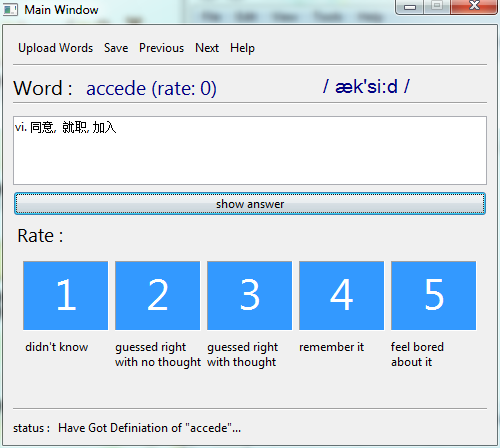

Welcome using Simple Glossary Killer (Api)
author : Jolam (http://bandj.us/jo)
Introduction :

The Simple Glossary Killer is, just as its name implies, a app
mainly for Chinese that helps u to learn your glossary, which support
multi-platform (Windows xp, vista, 7, linux and all other platforms that
support JRE).
Setup:
How-to-use :
- right arrow → ：go to the next word.
- left arrow → ：go to the previous word.
- keypad 1-5 ：rate the word with corresponding point.
- keypad enter ：get the meaning of the word form dict.cn.
Api :
upcoming...
Source :
upcoming...